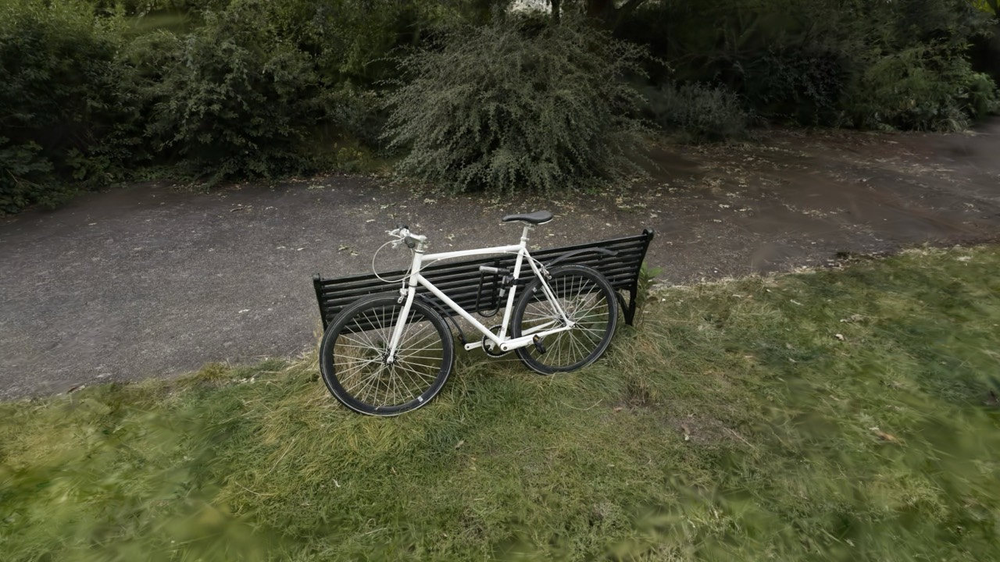
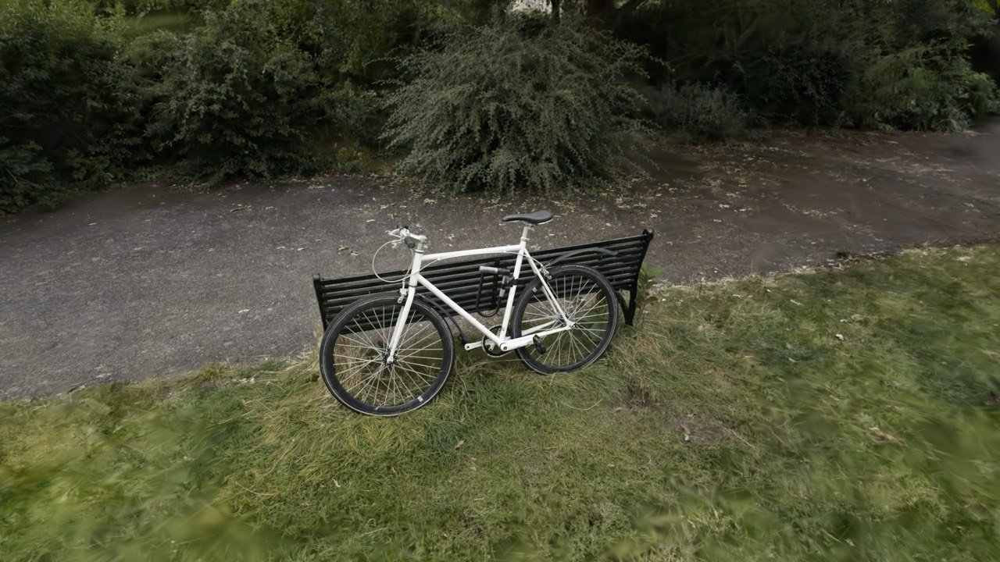
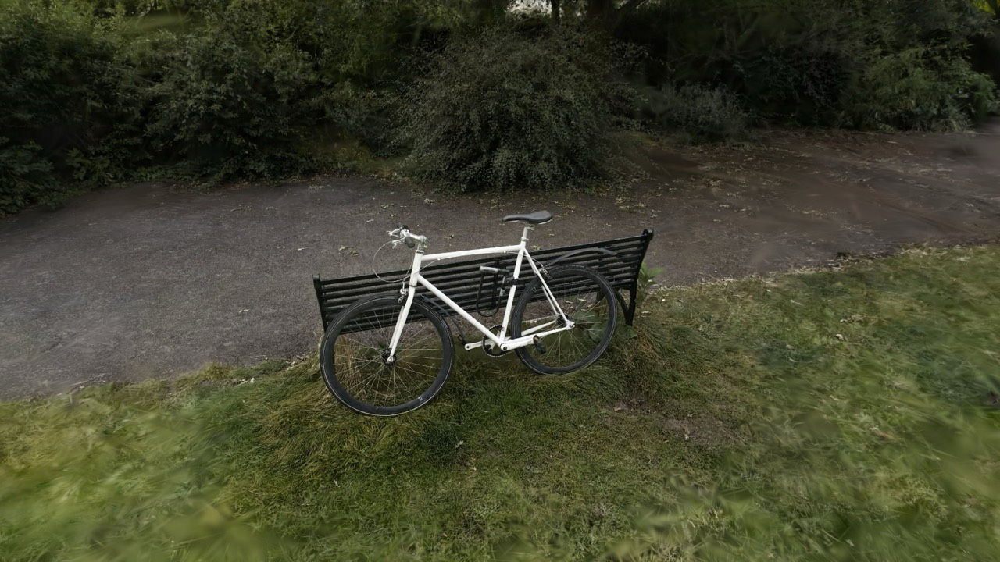
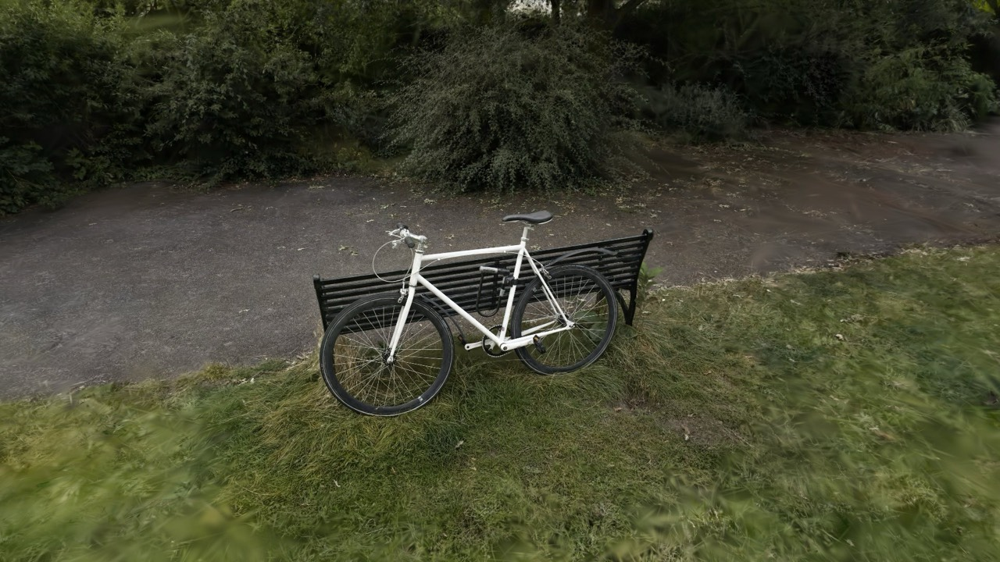

Radix, SparkJS 2.3.1, and PlayCanvas 2.23.1 drawing the same 5 scans (546k to 10.0M splats) along the same camera path. Set to cull the same splats, Radix and PlayCanvas run at about the same speed on WebGPU.
Oct 9, 2026; Apple M3 Max, Google Chrome 154.0.8037.98, 1920x1080. All results and the method: the full report.
Radix and Spark set to cull and blur splats as PlayCanvas does by default (section 03), so all three draw the same splats. Speed relative to Radix on WebGPU: the geometric mean over the scenes of the ratio of mean frame times; longer is faster.
| Scene | Splats | Radix · WebGPU | Radix · WebGL2 | Spark · WebGL2 | PlayCanvas · WebGPU | PlayCanvas · WebGL2 |
|---|---|---|---|---|---|---|
| Butterfly | 546k | 3.4 | 4.5 | 3.7 | 3.5 | 3.5 |
| Ceramic (cave) | 2.0M | 5.8 | 8.7 | 7.8 | 5.5 | 6.2 |
| Sutro | 2.0M | 3.4 | 6.0 | 5.4 | 3.4 | 4.1 |
| Bicycle | 6.1M | 4.8 | 12.5 | 12.1 | 4.5 | 9.4 |
| Grace interior | 10.0M | 8.1 | 15.1 | 16.1 | 7.6 | 11.3 |
The frame times above measure each frame alone. Here the same path runs in a requestAnimationFrame loop on a 120 Hz display with vsync on, as in an app, culling matched.
| Scene | Splats | Radix · WebGPU | Radix · WebGL2 | Spark · WebGL2 | PlayCanvas · WebGPU | PlayCanvas · WebGL2 |
|---|---|---|---|---|---|---|
| Butterfly | 546k | 120 | 120 | 120 | 120 | 120 |
| Ceramic (cave) | 2.0M | 120 | 119 | 120 | 120 | 120 |
| Sutro | 2.0M | 120 | 120 | 120 | 120 | 120 |
| Bicycle | 6.1M | 120 | 102 (9% late) | 96 (12% late) | 120 | 120 |
| Grace interior | 10.0M | 118 (2% late) | 81 (23% late) | 73 (27% late) | 120 | 116 (3% late) |
See also: Vsync results for every setting
By default PlayCanvas skips splats drawn under a 1-pixel radius and, on WebGPU, splats whose opacity × area is under 0.75 px². Radix and Spark draw them, as the reference 3DGS rasterizer does. The culls are aggressive: on WebGPU they remove most of the bicycle's wheel spokes (section 04). PlayCanvas's dilation is also fixed at 0.075 px², a quarter of the 0.3 px² of standard 3DGS training, so its splats are drawn smaller than trained. So at defaults PlayCanvas does less work per frame, and on WebGPU Radix is 1.30× slower than it. With no culling in any renderer, Radix on WebGPU is 1.05× slower than PlayCanvas.
| Culling | Radix · WebGPU | Radix · WebGL2 | Spark · WebGL2 | PlayCanvas · WebGPU | PlayCanvas · WebGL2 |
|---|---|---|---|---|---|
| Defaults | 1.00× | 0.67× | 0.73× | 1.30× | 0.98× |
| No culling | 1.00× | 0.67× | 0.72× | 1.05× | 0.92× |
| Matched culling | 1.00× | 0.57× | 0.62× | 1.03× | 0.78× |
The same culling makes Radix on WebGPU 1.26× as fast as its defaults, through objectParams.minContribution, minPixelRadius, and params.minAlpha. PlayCanvas's thresholds are set in half pixels (it measures splats with twice the focal length), so its minContribution: 3 is 0.75 here.
See also: Params Performance
The bicycle scan (6.1M splats) from the benchmark's start view, with each renderer's defaults; Radix and Spark use blurAmount: 0, preBlurAmount: 0.3, as the scan was trained without anti-aliasing. PlayCanvas on WebGPU culls faint splats by default, which removes most of the wheel spokes.




Click an image to enlarge it; ← and → step between them, Esc closes.
See also: The full report Radix and SparkJS Performance